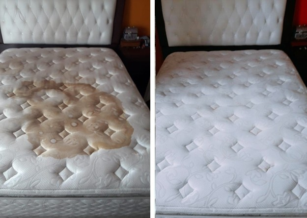
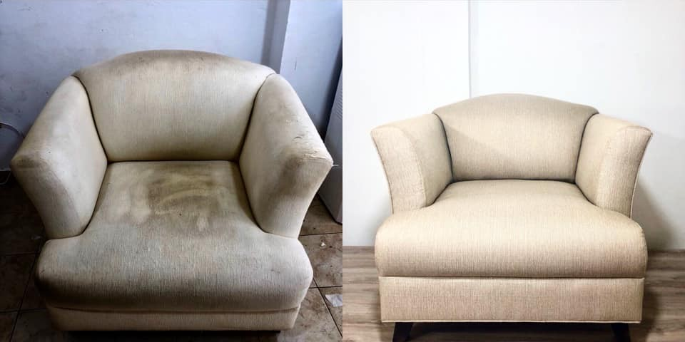
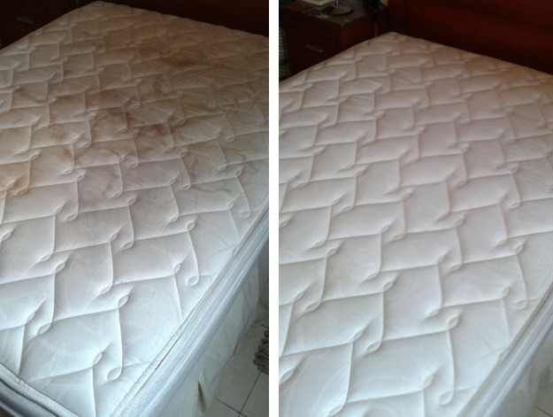
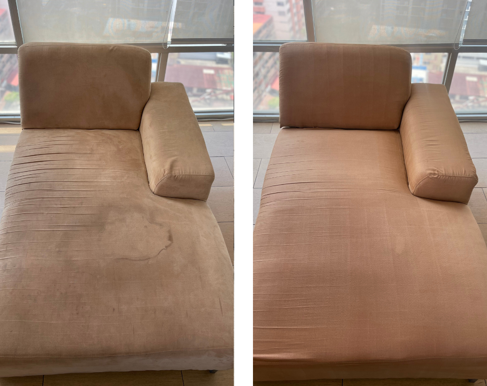

Servicio a domicilio de limpieza profunda y desinfección
de muebles, colchones y más
En Lux Clean Home, seguimos un proceso riguroso y eficaz para garantizar la limpieza profunda y desinfección total de tus muebles y colchones. Nuestro método combina tecnología, experiencia y productos certificados para cuidar cada detalle:
"En Lux Clean Home cuidamos cada detalle de tus muebles, llevamos nuestro servicio exclusivo directamente a tu hogar, usando productos premium y tecnología avanzada para que todo quede impecable, como tú te mereces."
"Transformamos tu descanso con un servicio de desinfección y desmanchado de colchones pensado para ti. Tecnología de punta y atención de lujo, porque mereces dormir limpio, seguro y en confort absoluto."
"Renovamos tus sillas con el detalle y precisión que merecen. Ya sea en tu hogar o tu oficina, nuestro equipo especializado asegura resultados impecables y un servicio a la altura de tu espacio."



